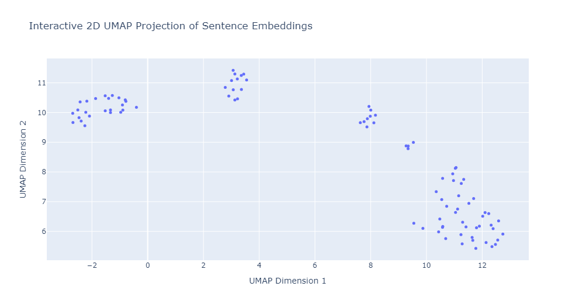

Board Games RAG SystemThis project demonstrates the creation of a Retrieval-Augmented Generation (RAG) system using a dataset of popular board games such as Monopoly, Battleship, Ticket to Ride, Codenames, and Exploding Kittens. The goal was to analyze, embed, and generate semantic responses to questions about game rules using state-of-the-art machine learning techniques. Project OverviewThe system integrates advanced models such as SentenceTransformer for embedding the rule texts of different board games, followed by dimensionality reduction and clustering using UMAP and K-means. KeyBERT was employed to extract important keywords, while language models like Mistral-7b and Gemma-7b-it were integrated to generate relevant responses based on user queries. Technologies Used:
UMAP VisualizationAfter cleaning and pre-processing the rule texts, I split the content into sentences and chunked them into groups. Using SentenceTransformer embeddings, I applied UMAP to reduce the dimensionality of the high-dimensional embeddings and visualize them in a 2D space. This enabled clear representation of the semantic structure across different board game rules.

Clustering and Keyword ExtractionI applied K-means clustering to group the board game rule embeddings, and used KeyBERT to extract representative keywords from each cluster. The clusters and extracted keywords provided insight into the various components of each game's rules. 
Language Model IntegrationFor generating accurate answers to user queries about the game rules, I integrated the Mistral-7b model from GPT4ALL and Gemma-7b-it from Hugging Face. The models were fine-tuned to perform question-answering (QA) tasks specifically tailored to board game rules. Example Responses
|